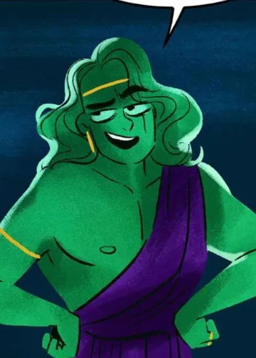

Dive into the intricate world of "Lore Olympus," where ancient myths collide with modern story, exploring power, love, trauma, and identity in captivating ways.


In the Lore Olympus webtoon, Hades, the God of the underworld, takes center stage. Often depicted as a handsome blue man in a business suit, Hades runs the Underworld Corporation, serves as the older brother of Zeus and Poseidon, and plays a role in the Six Traitor Dynasty. His character takes on the burden of leadership and pursuing personal interests. [Read Lore Olympus Season 1 Review]

Persephone, the goddess of spring, is the story’s heroine alongside the underworld. Initially portrayed as an innocent and naive young woman, her character develops dramatically as she faces more challenges. Persephone is depicted with pink skin and a generous heart, a stark contrast to the harsh reality of Olympus.

Zeus, the king of the gods, is depicted as a yellow-skinned man with long, straight hair. Known for his promiscuity and egotism, Zeus’ actions often brought chaos to Olympus. A member of the Six Realms of Lies, he has intimate relationships with many characters, including his brothers Hades and Poseidon, and many lovers. His character provides a lens through which to examine issues of power and corruption.
Poseidon, the God of the sea, is Zeus’s brother from the underworld. He is usually characterized by a carefree and quick temperament, portrayed with green skin and long, wavy hair. Despite being slightly less witted, Poseidon is very loyal to his family. His relationship with his wife Amphitrite and their polygamous arrangement add an intriguing dynamic to his character.

Eros, the God of love and the son of Aphrodite and Ares is a strong, maroon young man. He is one of Persephone’s best friends and knows the depression she is enduring. Eros is supportive and loving, often helping to nurture other romantic relationships as he deals with his challenges, including his relationship with Psyche.

Hermes, the God of speed travel, is depicted as an athletic man in red. He works as a soul collector for Hades and is an old friend of Persephone. His character adds lightness and realism to the story.

Apollo, the sun, God of music and prophecy, is a dark red, strong man known for arrogance. He becomes an essential antagonist after Persephone is raped, bringing severe issues of power abuse and trauma into play.

Artemis, the goddess of the hunt, is Persephone’s best friend and roommate. She is a robust, dark-red tomboy fiercely protective of Persephone. Her relationship with her brother Apollo grows as he realizes his true nature.

Demeter, the harvest goddess, is Persephone’s overprotective mother. She is a tall, green woman with long red hair. Her stern and controlling nature stemmed from a deep-seated fear of what her daughter could do and the dangers she faced.

Ares, the God of war, seems like a chubby man with red eyes. He has a tumultuous relationship with Aphrodite and a brief history with Persephone, which adds to his character’s involvement in the plot.
Rachel Smith’s Lore Olympus webtoon is a modern retelling of the ancient Greek myth of Hades and Persephone, has taken the digital comics world by storm. This article explores the complex world of “Lore Olympus,” providing details on the Lore Olympus characters, major themes, and the impact this beloved series has on readers.
In the Lore Olympus webtoon, Hades, the God of the underworld, takes center stage. Often depicted as a handsome blue man in a business suit, Hades runs the Underworld Corporation, serves as the older brother of Zeus and Poseidon, and plays a role in the Six Traitor Dynasty. His character takes on the burden of leadership and pursuing personal interests. [Read Lore Olympus Season 1 Review]
Persephone, the goddess of spring, is the story’s heroine alongside the underworld. Initially portrayed as an innocent and naive young woman, her character develops dramatically as she faces more challenges. Persephone is depicted with pink skin and a generous heart, a stark contrast to the harsh reality of Olympus. Her journey included discovering her strength, and she dealt with the trauma of being raped by Apollo, as well as her strong feelings about the underworld.

Zeus, the king of the gods, is depicted as a yellow-skinned man with long, straight hair. Known for his promiscuity and egotism, Zeus’ actions often brought chaos to Olympus. A member of the Six Realms of Lies, he has intimate relationships with many characters, including his brothers Hades and Poseidon, and many lovers. His character provides a lens through which to examine issues of power and corruption.
Poseidon, the God of the sea, is Zeus’s brother from the underworld. He is usually characterized by a carefree and quick temperament, portrayed with green skin and long, wavy hair. Despite being slightly less witted, Poseidon is very loyal to his family. His relationship with his wife Amphitrite and their polygamous arrangement add an intriguing dynamic to his character.

Eros, the God of love and the son of Aphrodite and Ares is a strong, maroon young man. He is one of Persephone’s best friends and knows the depression she is enduring. Eros is supportive and loving, often helping to nurture other romantic relationships as he deals with his challenges, including his relationship with Psyche.
Also Read: 50 Best Fantasy Manhwa to Read Now
Hermes, the God of speed travel, is depicted as an athletic man in red. He works as a soul collector for Hades and is an old friend of Persephone. His character adds lightness and realism to the story.
Apollo, the sun, God of music and prophecy, is a dark red, strong man known for arrogance. He becomes an essential antagonist after Persephone is raped, bringing severe issues of power abuse and trauma into play.
Artemis, the goddess of the hunt, is Persephone’s best friend and roommate. She is a robust, dark-red tomboy fiercely protective of Persephone. Her relationship with her brother Apollo grows as he realizes his true nature.
Demeter, the harvest goddess, is Persephone’s overprotective mother. She is a tall, green woman with long red hair. Her stern and controlling nature stemmed from a deep-seated fear of what her daughter could do and the dangers she faced.
Ares, the God of war, seems like a chubby man with red eyes. He has a tumultuous relationship with Aphrodite and a brief history with Persephone, which adds to his character’s involvement in the plot.
“Lore Olympus” is not a retelling of modern Greek mythology; It is a beautiful tapestry of interlocking stories that explore deep themes of power, love, trauma, and identity. Rachel Smith’s vibrant art and nuanced storytelling have created a world that deeply affects readers, offering entertainment and insight. Let us know in the comments below what you think about the modern re-telling of Greek mythology.
Gyanesh Kumar

contactus@animemangatoon.com
author@animemangatoon.com
example@animemangatoon.com
Terms&Conditions
Comments
Maqsood Ahmed
October 10, 2024 at 18:06
yoyo
ReplyMaqsood Ahmed
October 10, 2024 at 18:06
yoyo
ReplyMaqsood Ahmed
October 10, 2024 at 18:06
yoyo
Reply